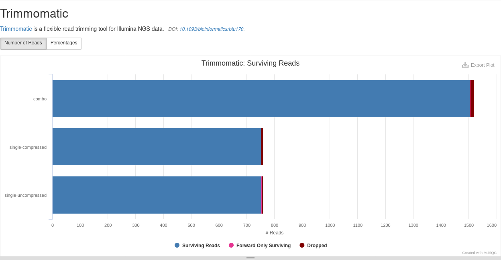
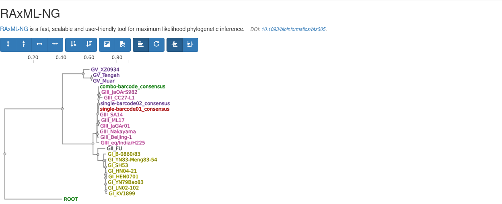

The YAVSAP report
Formerly known as “The Visualizer.”
YAVSAP outputs a consolidated report containing statistics on your analysis and the viral haplotypes found. The report is powered by MultiQC, so you can view it in any browser.
Launching the report
The report can be viewed simply by double-clicking the report/index.html file
in your specified results folder, but for the best experience, you will need to
run a temporary server. Don’t worry: it’s not as daunting as it sounds. Just
follow the instructions below.
Windows
You’ll need to download some server software first. You won’t need administrative privileges for this, though.
First time only
Open a PowerShell terminal by pressing WIN+X, then I
Type
Set-ExecutionPolicy RemoteSigned -Scope CurrentUserENTER and answerYto all the promptsType
Invoke-WebRequest get.scoop.sh | Invoke-ExpressionENTERType
scoop install pythonENTERClose the PowerShell window
Every time
Copy the entire
reportdirectory from the server to a location on your local computer
Open a PowerShell terminal by pressing WIN+X, then I

Type
cdand paste the path of thereportdirectory
Type
python -m http.server 8000ENTER
Open a browser, and navigate to http://localhost:8000

Note
You can launch multiple reports at once by changing
8000to another number in both the PowerShell window and the browser URL. Just make sure the number is larger than 1024, and for best results try to pick a number than doesn’t appear on this list.Once you are done with the report, close the browser, press CTRL+C in PowerShell, and close PowerShell
Mac and Linux
Hooray! Mac and Linux desktops come with server software pre-installed!
Copy the entire
reportdirectory from the server to a location on your local computer
Open a new terminal window
Mac Press CMD+SPACE, type
terminaland press enterLinux Press CTRL+ALT+T

Type
cdand the paste the path of thereportdirectory
Type
python -m http.server 8000ENTER
Open a browser, and navigate to http://localhost:8000

Note
You can launch multiple reports at once by changing
8000to another number in both the terminal window and the browser URL. Just make sure the number is larger than 1024, and for best results try to pick a number than doesn’t appear on this list.Once you are done with the report, close the browser, press CTRL+C in the terminal, and close the terminal
Using the Report
Here’s a section-by-section breakdown of how everything in the report works.
General Statistics

A table with a general overview of statistics that MultiQC cares about. These numbers have some limited use cases, but overall are just repeats of everything contained in the other sections.
FastQC (Illumina-only)

FastQC checks for
Number of reads per sample
Read quality
Sequence read diversity
GC content anomalies
Read length
Sequence duplication and over-representation
Adapter contamination
Because YAVSAP is primarily a viral analysis pipeline for metagenomic reads, diversity, GC content, and duplication are typically irrelevant: use them if you know what you are doing.
Number of reads + read length
These two numbers can be used to estimate coverage. The equation for coverage is1
where
\(c\) = coverage
\(L\) = average read length
\(N\) = number of reads
\(G\) = genome length
For variant- and haplotype-calling purposes, the coverage \(c\) should be well in excess of 60.
Read quality
Illumina reads are famous for being high quality. If you have reads that fail in the quality assessment, then there are likely errors in the upstream sample preparation (extraction, amplification, library prep) or sequencing. Low-quality reads can be used by YAVSAP, but will reduce the ability to call variants and haplotypes.
Adapter contamination
If adapters are found in your reads, then you can compensate by adjusting the Read trimming options. Note that FastQC runs before read trimming, so this check will fail even if the adapters are being trimmed off.
More detailed instructions for interpreting FastQC results can be found in the FastQC documentation.
NanoStat (Nanopore-only)

NanoStat calculates the
Median read length
N50 read length
Median read quality
Number of reads
Total base count
Read quality distribution
For long reads, the N50 is generally more informative than the median length. Substituting \(L\) = N50 into Equation (1) will give an indication of the coverage of the sample.
If a large proportion of reads are low (<Q10), then YAVSAP will struggle to identify strains, and call variants and haplotypes. Quality that low indicates errors in either the upstream sample preparation (extraction, library prep) or sequencing, and the sequencing should be redone.
Trimmomatic (Illumina-only)

Trimmomatic removes adapters, low-quality reads, and ends of reads in a highly configurable manner. This section shows how many reads were left by Trimmomatic. Use this section in conjunction with FastQC to ensure only high-quality sequence reads are processed by YAVSAP.
Kraken

Kraken identifies whether sequencing reads belong to the virus of interest or
the host. This plot shows the five most abundant taxa in each sample pool.
Check this plot to see if host reads are overcoming the viral reads and
hindering the analysis. Depending on your Kraken database, host reads might be
unclassified and viral reads are identified, or it might be that host reads
are identified and viral reads are unclassified. The results from this plot
should be interpreted as the number of reads that will actually be analyzed by
YAVSAP.
Examples
Example 1
- Virus
SARS-CoV2 (SC2)
- Host
Homo sapiens (human)
- Kraken Database
- Kept reads
10239(viral)
In this case, both the virus and host will be identified in standard. The plot
will show the abundances of both Beta coronavirus and Homo sapiens reads.
Thanks to the --keep_taxid value, we know that only SC2 and related, non-human
reads will be aligned and variant-called. High percentages of Homo sapiens
reads indicate low viral load or a faulty extraction and/or amplification
protocol.
Example 2
- Virus
Japanese Encephalitis Virus (JEV)
- Host
Sus scrofa (domestic pig)
- Kraken Database
- Kept reads
10239(viral)
In this case, JEV is characterized in RefSeq, and its genome will be identified
with the standard Kraken database. In contrast, Sus scrofa will be marked as
unclassified with this database, as non-human mammals are not included in
standard. In this case, the unclassified reads should be filtered out. High
percentages of unclassified indicate a faulty extraction protocol and/or an
amplification protocol that is too non-specific
Example 3
- Virus
Bovine Rotavirus (RV)
- Host
Bos taurus (domestic cattle)
- Kraken Database
- Kept reads
10239(viral)
RV is not present in RefSeq, and Bos taurus is a non-human mammal, so both
would be unclassified if using standard. Instead, we switch to the nt
database. Both RV and Bos taurus sequences are present in the nt database,
so a plot should be interpreted in the same manner as the
first example.
Example 4
- Virus
Foot and Mouth Disease Virus (FMDV)
- Host
Homo sapiens (human)
- Kraken Database
- Kept reads
unclassifed
In this case, FMDV is in RefSeq, but it doesn’t matter because the database only
contains human sequences. In this case only the host reads will be identified,
so keep the unclassifed reads, and interpret them as viral reads.
minimap2

The alignments against the reference genome are displayed using IGV. The IGV interface is described in detail at https://software.broadinstitute.org/software/igv/UserGuide.
Note
There are minor differences between the desktop application and the web application.
Briefly, the reference genome is listed in the top, left corner. Display options (cursor, labels, zoom) are located in the top, right corner. Immediately below the gray bar the genome annotations are shown along the length of the reference genome. These are colored based on the type of annotation.
Gene
CDS
Mature Protein
Everything else
A coverage graph is displayed in a histogram labelled with each sample name. Along those coverage graphs, IGV will attempt to call variants using colored bars. These variants are not precise, and do not reflect the variants called by YAVSAP. Each gray bar below the coverage graph represents an aligned read. Variant calls are also shown on the reads that support them. Variant calls have the following legend:
|: C
|: T
|: G
|: A
|: Insertion
—: Deletion
IGV also attempts to call structural variants. These are generally meaningless in the context of viral haplotyping, and should be verified with some other tool.
- ⤆⤇ : Normal
- ⤆⤇ : Inversion
- ⤆⤇ : Inversion
- ⤆⤇ : Duplication or translocation
Haplotypes (CliqueSNV for Illumina, HapLink.jl for Nanopore)

A rough multi-sequence alignment for every consensus sequence and haplotype sequence found in each sample. The frequency of each minority haplotype, the closest strain, and that strain’s NCBI GenBank link is listed in the table. The bases are colored (A, C, G, T), and every variant site is highlighted purple.
RAxML-NG

The phylogenetic tree of all consensus sequences and haplotypes, as well as all the strains included in the genome list is shown in an interactive viewer. The toolbar across the top has controls for
Zoom
Sorting
Saving (image or Newick)
Tree style (linear, circular)
Alignment
Node names take the form of one of
<GENOTYPE>_<STRAIN><SAMPLENAME>_consensus<SAMPLENAME>_haplotype_<HAPLOTYPE_ID>
Each node is colored based on the node name before the first underscore (_).
This means that strains of the same genotype have the same color, and each
sample’s consensus and haplotype sequences all have the same colors. There are
only 10 colors, so having more samples than that might result in color
collision. In that case, it may be advisable to download the Newick file and
reformat it in another tree program.
Software Versions

A table of all the software used to produce the report. Just to make sure you give credit where it is due.
Workflow Summary

A list of all the parameters (and various other metadata) used to produce this particular analysis and report. Sort of a light version of the Nextflow report.
- 1
Lander ES, Waterman MS. Genomic mapping by fingerprinting random clones: a mathematical analysis. Genomics. 1988 Apr;2(3):231-9. doi: 10.1016/0888-7543(88)90007-9. PMID: 3294162.